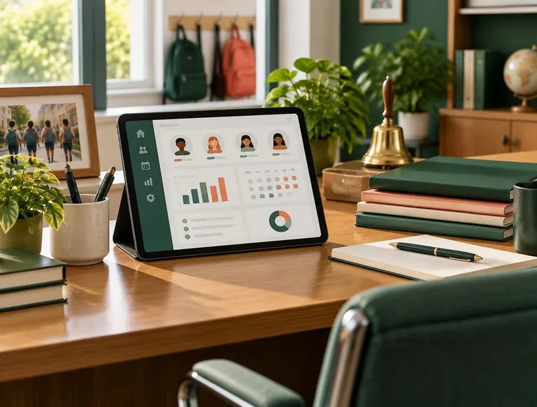

Attendance
Fast daily attendance that teachers will actually enjoy using.
We build school management tools that give administrators clarity and give teachers and parents less to chase.
Classora is a school management platform designed around everyday school work: taking attendance, collecting fees, planning timetables and keeping parents informed.
Based in Bengaluru, our team works with school leaders, teachers and accountants to keep the product practical and easy to adopt.
Instead of spreading records across registers, spreadsheets and messaging groups, Classora brings them together in one clear dashboard.
Every screen should be understandable in seconds, even for someone using it for the first time.
School information deserves to be accurate, organised and easy to find when it is needed.
Administrators, teachers and parents all use schools differently, so the product serves each of them.
Access is limited by role, and families’ information is shown only to those who need it.
A responsive interface that is comfortable on a phone at the school gate or a desktop in the office.
Clear answers, realistic timelines and a team you can phone or email.

Fast daily attendance that teachers will actually enjoy using.
A clear picture of what is paid and what is still due.
Schedules that are easy to plan and easy to change.
Updates that reach parents without extra effort from staff.
Summaries that make management meetings shorter.
Role-based access and careful handling of student records.
Help moving from registers and spreadsheets to Classora.
A calm, consistent interface that behaves the same every day.
We start from how a school day actually unfolds and build tools that fit into it, rather than asking schools to change how they work.
Talk to us about your school and we will walk you through the dashboard.